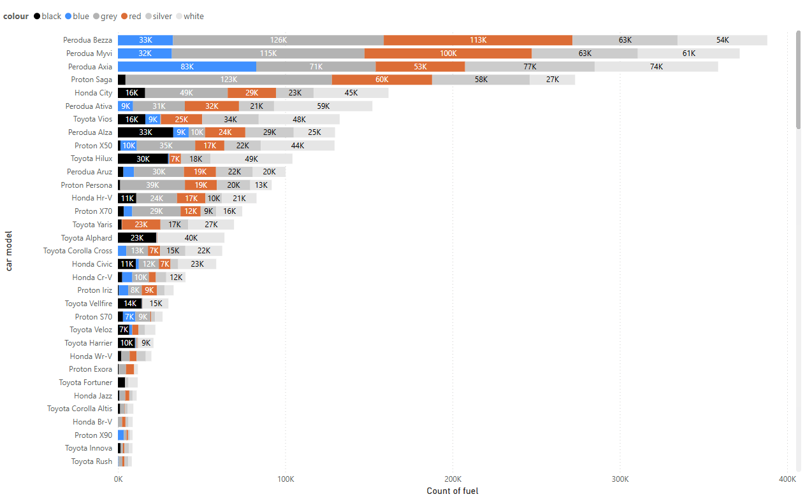

PowerBI Car Registration Dashboard Portfolio
This portfolio showcases a PowerBI dashboard visualizing car registration brands and trends in Malaysia over the past year.
Dashboard Preview
Interactive dashboard showing car registration trends by brand, region, and time period.
Key Dashboard Insights
- Compare car prices and registration volumes by model and maker
- Track market trends and registration growth from 2020 to 2024
- Analyze consumer preferences for car colors and popular models
- Filter data interactively by car maker and model
Dashboard Summary
This dashboard provides a comprehensive overview and analysis of car registration data in Malaysia, focusing on key attributes such as price, fuel type, and registration count over time for various car makers and models. Users can interact with slicers to filter by car maker and model, enabling a tailored exploration of the data.
The visuals include a bar chart comparing the maximum registered price of different car models, a stacked bar chart showing registration counts segmented by car color, a line chart tracking registration trends for major manufacturers from 2020 to 2024, and a detailed table listing prices and registration years for individual car variants. These elements work together to highlight market competitiveness, model popularity, and consumer preferences.
Key insights reveal that BYD Seal 7 commands the highest price point, while Proton and Perodua models dominate in registration volume, especially in the mid-range segment. The line chart illustrates a cyclical yet upward trend in car registrations, with Perodua consistently leading the market, followed by Proton, Honda, and Toyota. The stacked bar chart further emphasizes Perodua's mass-market appeal, with Myvi, Bezza, and Ativa among the most popular models.
 Consumer color preferences are also evident, with silver, white, and grey being the most favored choices across popular models, while black and red are less common. Overall, the dashboard offers valuable insights into pricing, market dynamics, and consumer trends, making it a powerful tool for understanding the Malaysian automotive landscape.
Dashboard Features
- Brand-wise car registration analysis
- Monthly and yearly trends visualization
- Regional breakdown of registrations
- Interactive filters for brand, region, and time
- Key insights and summary statistics
About the Data
Data is sourced from Malaysia's official car registration records, covering major brands and regions. The dashboard is designed to help users understand market trends and brand performance.
Contact & More Information
For more details or to request access to the full dashboard, please contact your.email@example.com.